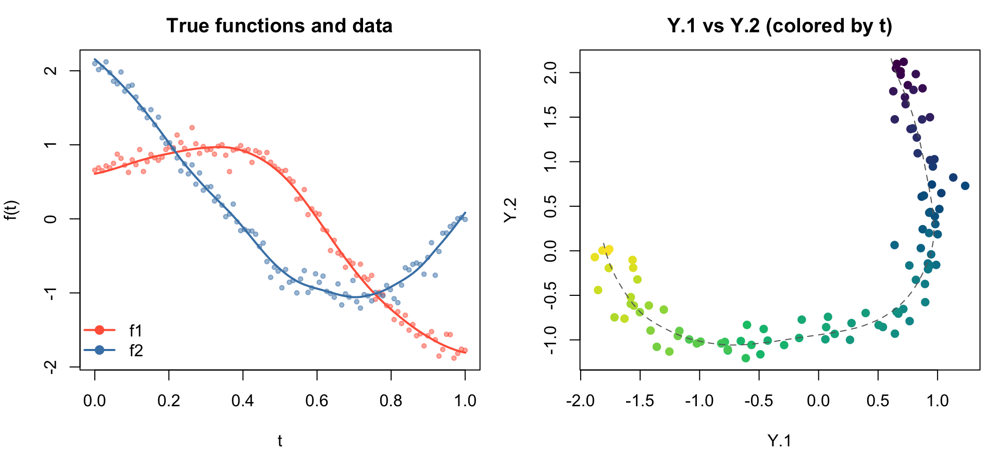
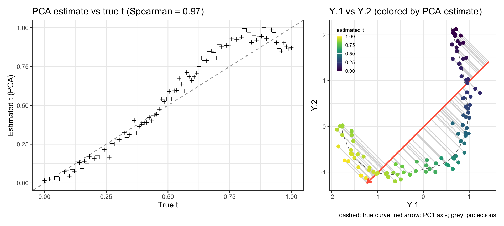
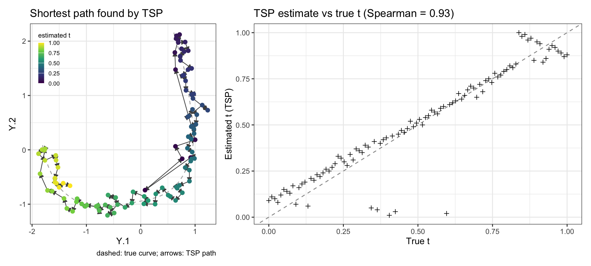
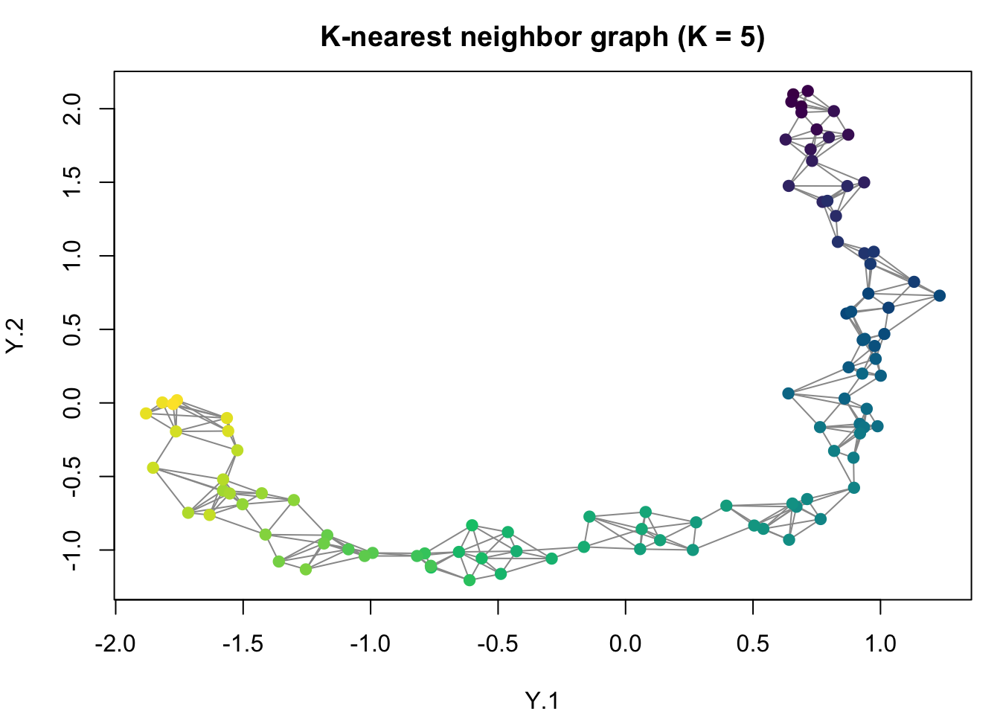
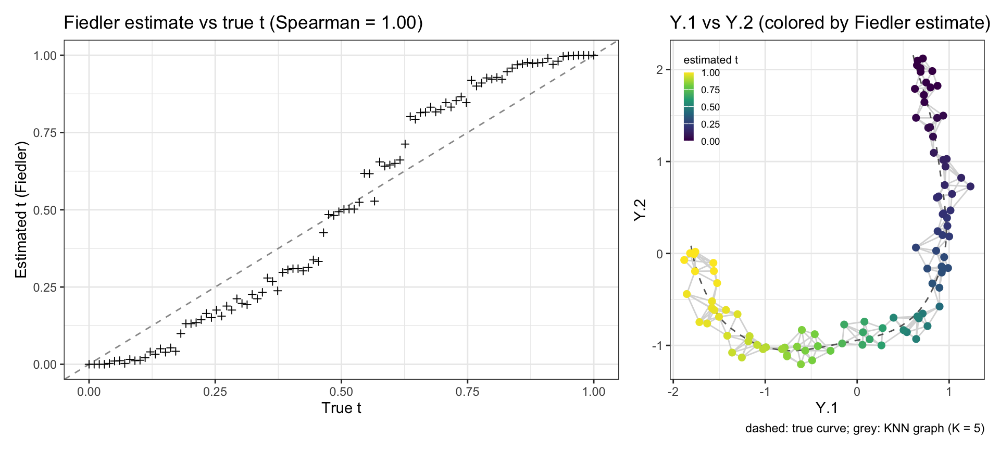
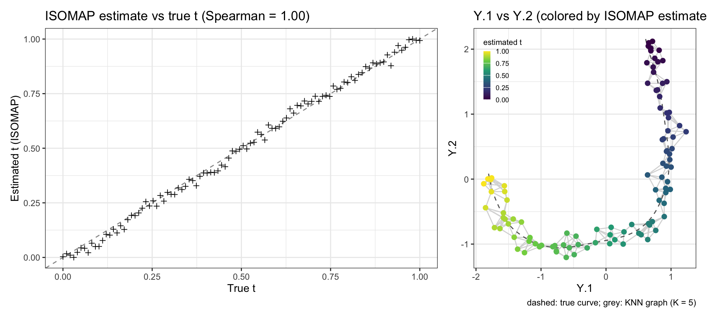

# keep package startup messages and warnings out of the rendered output
knitr::opts_chunk$set(message = FALSE, warning = FALSE)
library(ggplot2)
library(patchwork)In this document, we will explore how different methods could be used to obtain an initial estimate of the ordering of the samples.
For simplicity, we will consider a simple setting with only two columns (\(P = 2\)) and a single latent variable \(t \in [0, 1]\) that determines the values of the two columns.
The matrix \(Y \in \mathbb{R}^{N \times P}\) is generated as follows: 1. Generate \(t_1, ..., t_N\) uniformly in \([0, 1]\). 2. Generate two smooth functions \(f_1(t)\) and \(f_2(t)\), and let \(F = [f_1(t), f_2(t)] \in \mathbb{R}^{N \times P}\). 3. Generate \(Y = F + \epsilon\), where \(\epsilon \sim N(0, \sigma^2 I)\) is Gaussian noise.
set.seed(1234)
N <- 100
P <- 2
t <- seq(0, 1, length.out = N)
# f_j are independent draws from a GP with Matern(nu = 2.5, range = 0.1) covariance
covariance <- fields::Matern(abs(outer(t, t, "-")), aRange = 0.5, smoothness = 2.5)
L <- t(chol(covariance + diag(1e-10, N)))
F_true <- L %*% matrix(rnorm(N * P), N, P) # N x P, column j is f_j(t)
# normalize such that f_j(t) has mean 0 and sd 1
F_true <- scale(F_true, center = TRUE, scale = TRUE)
# add noise: epsilon ~ N(0, 0.1), where 0.1 is the sd
Y <- F_true + matrix(rnorm(N * P, sd = (0.1)), N, P)
colnames(Y) <- c("Y.1", "Y.2")
op <- par(mfrow = c(1, 2), mar = c(4, 4, 2.5, 1))
fcols <- c("tomato", "steelblue")
# left: f1 and f2 as functions of t, with the noisy observations
matplot(t, Y, pch = 19, cex = 0.6, col = adjustcolor(fcols, 0.5),
xlab = "t", ylab = "f(t)", main = "True functions and data")
matlines(t, F_true, lty = 1, lwd = 2, col = fcols)
legend("bottomleft", legend = c("f1", "f2"), col = fcols,
lty = 1, lwd = 2, pch = 19, bty = "n")
# right: scatterplot of Y.1 ~ Y.2 (colored by t)
cols <- hcl.colors(N, "viridis")
plot(Y[, 1], Y[, 2], pch = 19, col = cols, xlab = "Y.1", ylab = "Y.2",
main = "Y.1 vs Y.2 (colored by t)")
lines(F_true[, 1], F_true[, 2], col = "grey40", lty = 2)
par(op)We hope to explore methods that recover the true ordering of the samples (i.e., the order of \(t_1, ..., t_N\)) from the observed data \(Y\).
We start with using the first PC scores as an estimate of the ordering of the samples.
Y_centered <- scale(Y, center = TRUE, scale = FALSE)
svd_Y <- svd(Y_centered)
U1 <- svd_Y$u[, 1] * svd_Y$d[1] # first left singular vector scaled by the first singular value
v1 <- svd_Y$v[, 1] # PC1 direction in (Y.1, Y.2) space
# the sign of a singular vector is arbitrary; flip it to agree with the true t for display
if (cor(U1, t) < 0) {
U1 <- -U1
v1 <- -v1
}
t_pca <- (U1 - min(U1)) / (max(U1) - min(U1))
rho_pca <- cor(t_pca, t, method = "spearman")
p_left <- ggplot(data.frame(t = t, t_pca = t_pca), aes(t, t_pca)) +
geom_abline(intercept = 0, slope = 1, colour = "grey60", linetype = "dashed") +
geom_point(shape = 3) +
labs(x = "True t", y = "Estimated t (PCA)",
title = sprintf("PCA estimate vs true t (Spearman = %.2f)", rho_pca)) +
theme_bw()
proj <- sweep(outer(U1, v1), 2, colMeans(Y), "+")
df_pts <- data.frame(y1 = Y[, 1], y2 = Y[, 2], p1 = proj[, 1], p2 = proj[, 2],
t_pca = t_pca)
df_axis <- data.frame(x = proj[which.min(U1), 1], y = proj[which.min(U1), 2],
xend = proj[which.max(U1), 1], yend = proj[which.max(U1), 2])
p_right <- ggplot(df_pts) +
geom_segment(aes(y1, y2, xend = p1, yend = p2), colour = "grey85") +
geom_path(data = data.frame(f1 = F_true[, 1], f2 = F_true[, 2]),
aes(f1, f2), colour = "grey40", linetype = "dashed") +
geom_segment(data = df_axis, aes(x, y, xend = xend, yend = yend),
colour = "tomato", linewidth = 1,
arrow = arrow(length = unit(0.25, "cm"))) +
geom_point(aes(y1, y2, colour = t_pca), size = 2) +
scale_colour_viridis_c(name = "estimated t", limits = c(0, 1)) +
coord_equal() +
labs(x = "Y.1", y = "Y.2", title = "Y.1 vs Y.2 (colored by PCA estimate)",
caption = "dashed: true curve; red arrow: PC1 axis; grey: projections") +
theme_bw() +
theme(legend.position = "inside",
legend.position.inside = c(0.02, 0.98),
legend.justification = c(0, 1),
legend.background = element_blank(),
legend.key.height = unit(0.35, "cm"),
legend.key.width = unit(0.25, "cm"),
legend.title = element_text(size = 8),
legend.text = element_text(size = 7))
p_left + p_right
If we are just interested in getting the ordering of the samples, we can also frame this as a traveling salesman problem (TSP) on the samples, where the distance between sample \(i\) and sample \(j\) is the Euclidean distance between their observed values \(Y_i\) and \(Y_j\).
Let \(d_{i,j} = ||Y_i - Y_j||_2\) be the Euclidean distance between sample \(i\) and sample \(j\). TSP finds the shortest path that visits all samples exactly once. The order of the samples in the shortest path can be used as an estimate of the order of \(t_1, ..., t_N\).
In other words, the objective function of TSP, given an ordering of the samples \(\pi\), is \[ J(\pi) = \sum_{i=1}^{N-1} d_{\pi(i), \pi(i+1)} \] where \(\pi(i)\) is the index of the sample at position \(i\) in the ordering.
Note that TSP is just finding the ordering, not the actual positions \(t_i\). The actual positions are only determined up to a monotone transformation. For now, we will assume the estimate \(\hat{t}_i = \pi(i)/N\).
It is generally very hard to find the global optimal solution of TSP. One special case is when all the columns of \(Y\) are monotone to each other, in which case the TSP solution is just ordering samples by any of the column.
However, solving TSP is NP-hard, one typically uses heuristics to
find a good local solution. We will use the TSP package in
R to solve the TSP problem.
library(TSP)
set.seed(1)
# compute the distance matrix
dist_matrix <- as.matrix(dist(Y))
# solve the TSP problem
tsp <- TSP(dist_matrix)
# we want a shortest open path, not a closed tour: add a dummy city at
# distance 0 from every sample, solve, then cut the tour at the dummy city
tsp <- insert_dummy(tsp, n = 1, label = "cut")
tour <- solve_TSP(tsp, method = "repetitive_nn")
path <- cut_tour(tour, "cut", exclude_cut = TRUE) # sample indices in path order
# path[k] is the sample visited k-th, so the rank of sample i is k with path[k] = i
rank_samples <- integer(N)
rank_samples[path] <- seq_len(N)
# the direction of the path is arbitrary; flip it to agree with the true t for display
if (cor(rank_samples, t) < 0) rank_samples <- N + 1 - rank_samples
# estimate t from the order
t_tsp <- rank_samples / N
rho_tsp <- cor(t_tsp, t, method = "spearman")
# left: the shortest path in (Y.1, Y.2) space, arrows point in the direction of increasing estimated t
ord <- order(rank_samples) # sample indices in order of increasing estimated t
df_path <- data.frame(x = Y[ord[-N], 1], y = Y[ord[-N], 2],
xend = Y[ord[-1], 1], yend = Y[ord[-1], 2])
p_path <- ggplot() +
geom_path(data = data.frame(f1 = F_true[, 1], f2 = F_true[, 2]),
aes(f1, f2), colour = "grey70", linetype = "dashed") +
geom_segment(data = df_path, aes(x, y, xend = xend, yend = yend),
colour = "grey30", linewidth = 0.4,
arrow = arrow(length = unit(0.18, "cm"), type = "closed")) +
geom_point(data = data.frame(y1 = Y[, 1], y2 = Y[, 2], t_tsp = t_tsp),
aes(y1, y2, colour = t_tsp), size = 2) +
scale_colour_viridis_c(name = "estimated t", limits = c(0, 1)) +
coord_equal() +
labs(x = "Y.1", y = "Y.2", title = "Shortest path found by TSP",
caption = "dashed: true curve; arrows: TSP path") +
theme_bw() +
theme(legend.position = "inside",
legend.position.inside = c(0.02, 0.98),
legend.justification = c(0, 1),
legend.background = element_blank(),
legend.key.height = unit(0.35, "cm"),
legend.key.width = unit(0.25, "cm"),
legend.title = element_text(size = 8),
legend.text = element_text(size = 7))
# right: estimated vs true t (a perfect ordering is monotone)
p_tsp <- ggplot(data.frame(t = t, t_tsp = t_tsp), aes(t, t_tsp)) +
geom_abline(intercept = 0, slope = 1, colour = "grey60", linetype = "dashed") +
geom_point(shape = 3) +
labs(x = "True t", y = "Estimated t (TSP)",
title = sprintf("TSP estimate vs true t (Spearman = %.2f)", rho_tsp)) +
theme_bw()
p_path + p_tsp
The TSP objective for this solution is:
J_tsp <- sum(dist_matrix[cbind(path[-N], path[-1])])
J_tsp[1] 16.61186Now, we look at methods that are based on the local manifold structure of the data. This type of methods assumes the Euclidean distance between nearby samples is reliable, and the global structure can be recovered by connecting nearby samples.
The first approach is Fiedler vector, which starts with computing a K-nearest neighbor graph of the samples:
K <- 5
D <- as.matrix(dist(Y))
# for each sample, find its K nearest neighbors (excluding itself)
knn_idx <- t(apply(D, 1, function(d) order(d)[2:(K + 1)])) # N x K
# adjacency matrix: connect i and j if either is among the other's K nearest neighbors
W <- matrix(0, N, N)
W[cbind(rep(seq_len(N), K), as.vector(knn_idx))] <- 1
W <- pmax(W, t(W))
par(mfrow = c(1, 1), mar = c(4, 4, 2.5, 1))
# plot the graph on top of the scatterplot of Y.1 ~ Y.2
plot(Y[, 1], Y[, 2], type = "n", xlab = "Y.1", ylab = "Y.2",
main = paste0("K-nearest neighbor graph (K = ", K, ")"))
edges <- which(W == 1 & upper.tri(W), arr.ind = TRUE)
segments(Y[edges[, 1], 1], Y[edges[, 1], 2],
Y[edges[, 2], 1], Y[edges[, 2], 2], col = "grey60")
points(Y[, 1], Y[, 2], pch = 19, col = cols)
Given the graph, let \(W \in \mathbb{R}^{N \times N}\) be its adjacency matrix, with \(W_{ij} = 1\) if samples \(i\) and \(j\) are connected and \(W_{ij} = 0\) otherwise (other weighting schemes can also be used). Let \(\Lambda\) be the diagonal degree matrix with \(\Lambda_{ii} = \sum_j W_{ij}\), and define the graph Laplacian \(L = \Lambda - W\). The Fiedler vector is the eigenvector of \(L\) associated with its second smallest eigenvalue.
Note that, for any vector \(v \in \mathbb{R}^N\), \[ \begin{aligned} v^T L v &= v^T \Lambda v - v^T W v = \sum_i \Lambda_{ii} v_i^2 - \sum_{i,j} W_{ij} v_i v_j \\ &= \sum_{i,j} W_{ij} v_i^2 - \sum_{i,j} W_{ij} v_i v_j \\ &= \frac{1}{2}\left(\sum_{i,j} W_{ij} v_i^2 + \sum_{i,j} W_{ij} v_j^2\right) - \sum_{i,j} W_{ij} v_i v_j \\ &= \frac{1}{2} \sum_{i,j} W_{ij} \left(v_i^2 - 2 v_i v_j + v_j^2\right) \\ &= \frac{1}{2} \sum_{i,j} W_{ij} (v_i - v_j)^2 . \end{aligned} \]
Hence \(L\) is positive semi-definite, and \(v^T L v\) measures how much \(v\) varies across the edges of the graph: it is small when \(v_i \approx v_j\) for every connected pair \((i, j)\). The smallest eigenvalue of \(L\) is \(0\), attained by the constant vector \(\mathbf{1}\), which is smooth but carries no information about the ordering. The Fiedler vector \(v_{\text{F}}\) is the smoothest non-constant vector on the graph (with unit norm), such that neighboring samples get similar values of \(v_{\text{F}}\).
# compute the fiedler vector, and show how it estimates t
Lambda <- diag(rowSums(W)) # degree matrix
L <- Lambda - W
eigen_L <- eigen(L, symmetric = TRUE)
fiedler_vector <- eigen_L$vectors[, N - 1] # second smallest
# the sign of an eigenvector is arbitrary; flip it to agree with the true t for display
if (cor(fiedler_vector, t) < 0) fiedler_vector <- -fiedler_vector
t_fiedler <- (fiedler_vector - min(fiedler_vector)) / (max(fiedler_vector) - min(fiedler_vector))
rho_fiedler <- cor(t_fiedler, t, method = "spearman")
# left: estimated vs true t (a perfect ordering is monotone)
p_left <- ggplot(data.frame(t = t, t_fiedler = t_fiedler), aes(t, t_fiedler)) +
geom_abline(intercept = 0, slope = 1, colour = "grey60", linetype = "dashed") +
geom_point(shape = 3) +
labs(x = "True t", y = "Estimated t (Fiedler)",
title = sprintf("Fiedler estimate vs true t (Spearman = %.2f)", rho_fiedler)) +
theme_bw()
# right: data colored by estimated t, on top of the KNN graph
df_edges <- data.frame(x = Y[edges[, 1], 1], y = Y[edges[, 1], 2],
xend = Y[edges[, 2], 1], yend = Y[edges[, 2], 2])
p_right <- ggplot() +
geom_segment(data = df_edges, aes(x, y, xend = xend, yend = yend),
colour = "grey85") +
geom_path(data = data.frame(f1 = F_true[, 1], f2 = F_true[, 2]),
aes(f1, f2), colour = "grey40", linetype = "dashed") +
geom_point(data = data.frame(y1 = Y[, 1], y2 = Y[, 2], t_fiedler = t_fiedler),
aes(y1, y2, colour = t_fiedler), size = 2) +
scale_colour_viridis_c(name = "estimated t", limits = c(0, 1)) +
coord_equal() +
labs(x = "Y.1", y = "Y.2", title = "Y.1 vs Y.2 (colored by Fiedler estimate)",
caption = sprintf("dashed: true curve; grey: KNN graph (K = %d)", K)) +
theme_bw() +
theme(legend.position = "inside",
legend.position.inside = c(0.02, 0.98),
legend.justification = c(0, 1),
legend.background = element_blank(),
legend.key.height = unit(0.35, "cm"),
legend.key.width = unit(0.25, "cm"),
legend.title = element_text(size = 8),
legend.text = element_text(size = 7))
p_left + p_right
Another approach in this category is ISOMAP.
This method also starts with the K-nearest neighbor graph. From the graph, it first computes a distance matrix \(D_{geo}\) between samples, where \(D_{geo}(i,j)\) is the length of the shortest path between sample \(i\) and sample \(j\) in the graph.
# Compute D_{geo} using the igraph package
library(igraph)
# weight each KNN edge by its Euclidean distance, so path length = sum of edge lengths
g <- graph_from_adjacency_matrix(W * D, mode = "undirected", weighted = TRUE)
D_geo <- distances(g)Then it applies classical multidimensional scaling (MDS) to \(D_{geo}\), to find a low-dimensional embedding of the samples whose Euclidean distances approximate the geodesic distances. Classical MDS double-centers the squared distances, \(B = -\frac{1}{2} J D_{geo}^{(2)} J\), where \(D_{geo}^{(2)}\) is the element-wise square of \(D_{geo}\) and \(J = I_N - \frac{1}{N}\mathbf{1}\mathbf{1}^T\), and then uses the top eigenvector of \(B\), scaled by the square root of its eigenvalue, as the 1-d embedding. Since we only want an ordering, we keep this single coordinate as the estimate of \(t\).
Note that if classical MDS is applied to the Euclidean distance matrix \(D\) instead, \(B = Y_c Y_c^T\) with \(Y_c\) the column-centered \(Y\), and the embedding is exactly the PC scores from the PCA section (up to sign). ISOMAP differs from PCA only by replacing \(D\) with \(D_{geo}\), which measures distance along the curve instead of straight through the ambient space.
# classical MDS on D_geo, keep the first coordinate (1-d embedding)
mds <- cmdscale(D_geo, k = 1)
t_isomap <- mds[, 1]
# the sign of the embedding is arbitrary; flip it to agree with the true t for display
if (cor(t_isomap, t) < 0) t_isomap <- -t_isomap
t_isomap <- (t_isomap - min(t_isomap)) / (max(t_isomap) - min(t_isomap))
rho_isomap <- cor(t_isomap, t, method = "spearman")
# left: estimated vs true t (a perfect ordering is monotone)
p_left <- ggplot(data.frame(t = t, t_isomap = t_isomap), aes(t, t_isomap)) +
geom_abline(intercept = 0, slope = 1, colour = "grey60", linetype = "dashed") +
geom_point(shape = 3) +
labs(x = "True t", y = "Estimated t (ISOMAP)",
title = sprintf("ISOMAP estimate vs true t (Spearman = %.2f)", rho_isomap)) +
theme_bw()
# right: data colored by estimated t, on top of the KNN graph used for D_geo
df_edges <- data.frame(x = Y[edges[, 1], 1], y = Y[edges[, 1], 2],
xend = Y[edges[, 2], 1], yend = Y[edges[, 2], 2])
p_right <- ggplot() +
geom_segment(data = df_edges, aes(x, y, xend = xend, yend = yend),
colour = "grey85") +
geom_path(data = data.frame(f1 = F_true[, 1], f2 = F_true[, 2]),
aes(f1, f2), colour = "grey40", linetype = "dashed") +
geom_point(data = data.frame(y1 = Y[, 1], y2 = Y[, 2], t_isomap = t_isomap),
aes(y1, y2, colour = t_isomap), size = 2) +
scale_colour_viridis_c(name = "estimated t", limits = c(0, 1)) +
coord_equal() +
labs(x = "Y.1", y = "Y.2", title = "Y.1 vs Y.2 (colored by ISOMAP estimate)",
caption = sprintf("dashed: true curve; grey: KNN graph (K = %d)", K)) +
theme_bw() +
theme(legend.position = "inside",
legend.position.inside = c(0.02, 0.98),
legend.justification = c(0, 1),
legend.background = element_blank(),
legend.key.height = unit(0.35, "cm"),
legend.key.width = unit(0.25, "cm"),
legend.title = element_text(size = 8),
legend.text = element_text(size = 7))
p_left + p_right